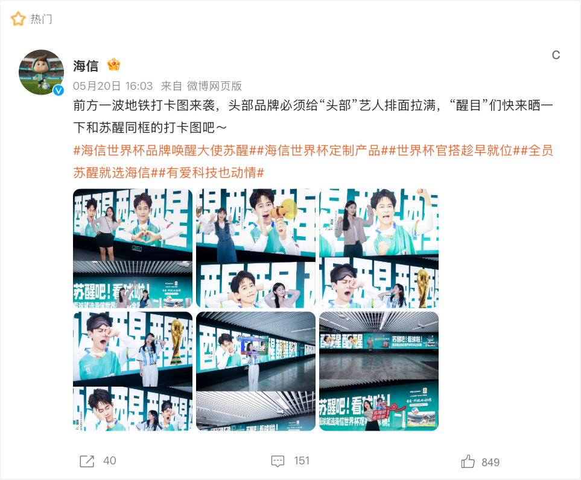
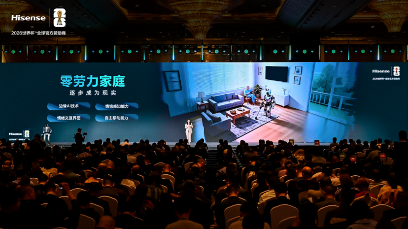

案例发生了什么

海信没有把世界杯停留在电视机屏幕里，而是延展到冰箱、空调等家庭观赛环境，用套购和真实场景承接大屏心智。
它解决的策略问题
这页要回答的不是“海信：家庭观赛全家桶 是否参与世界杯”，而是它如何通过“官方权益 + 零售场景”回应“从电视露出到家电组合购买”这一业务问题。
资源如何变成行动
资源基础
官方权益 + 零售场景
价值转译
把“从电视露出到家电组合购买”从赛事术语翻译成用户能理解的产品、体验或情绪理由。
触点设计
赛场/转播建立权威感，内容、零售、活动或服务负责把一次看见变成多次接触。
商业承接
优先观察商品、门店、电商、会员或长期社区项目是否接住了赛事关注。
动作拆解
- 把“看世界杯”扩展为“组织家庭观赛”。
- 用全品类家电共同组成体验，而非各自单打。
- 在零售和内容端保留实际购买入口。
可复用的方法大屏营销的价值不只在屏幕尺寸，而在它能否组织一个家庭场景。
DEEP SUPPLEMENT
深度补充：从动作到复盘
以下字段用于把案例从“看过一个创意”推进到可执行、可衡量、可继续补证的研究对象。
业务目标
从电视露出到家电组合购买
核心人群
赛事观众、品牌既有用户，以及可被官方权益转化的新客
可调用资产
官方权益 + 零售场景
触点与节奏
官方赛事资产、品牌内容、产品/服务、零售或会员触点
效果口径
权益可见度、用户参与、产品/服务使用与商业转化的分层变化
判断与边界
大屏营销的价值不只在屏幕尺寸，而在它能否组织一个家庭场景。
下一步资料归档
补齐“海信：家庭观赛全家桶”的品牌/权利方原始发布、视频首帧与完整片、线下执行现场、投放日期、市场范围及可追溯效果口径。
传播与业务机制
传播机制
官方身份提供可信起点，但传播效率取决于是否有可被球迷复述的具体动作。
参与机制
让观众从“看见赞助商”走到观看、体验、收藏、互动或到店。
业务机制
将权益落到产品、渠道或服务节点，避免赞助只停留在品牌曝光。
沉淀机制
用长期主题、会员、数据或社区项目延长赛期之外的关系。
适用条件、风险与证据
- 需要明确权益能被调用的范围，而不是只记录赞助级别。
- 至少准备内容与商业两条承接线，防止资源只在比赛画面里出现。
- 复盘时区分赛事可见度、用户参与和实际业务结果，不能相互替代。
证据台账可将已核动作作为内部判断基础；涉及投放规模、销售结果或合作细则时，仍应以品牌、平台或权利方的一手发布为准。 当前记录：已核（海信官方）；素材状态：已归档产品与线下物料。
品牌与权威来源物料
这里只展示可追溯到品牌、权利方、官方账号或明确注明原始出处的真实物料；研究图卡不计入案例图片。




EVIDENCE LEDGER
官方资料、结果口径与下一步
已验证事实
- 海信于 2026 年 3 月 5 日在青岛发布世界杯定制电视、空调、冰箱与“璀璨大力神套系”，把单品赞助扩展为家庭观赛全场景。
- 官方材料列出 UX2026 的 110% BT.2020 色域、10,000 nits 峰值亮度，以及 AI 三场同看、球员识别和战术分析等观赛功能。
- 品牌同时公布超过 10,000 场球迷活动、冠军竞猜最高 3,000 元现金红包、24 小时专线服务等赛期规划；这些属于计划口径，不等同于实际完成结果。
可追溯结果口径
- 已取得产品参数与活动规划，尚未取得活动实际完成场次、竞猜参与人数、红包核销率和套系销量。